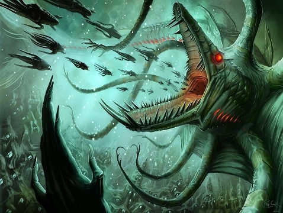

Дагон
Дагон (Dagon) — еще одна «суперзвезда» мифов Ктулху. В реальности Дагон был божеством зерна и земледелия (dagan, иуд. — зерно), почитаемым северо-западными семитскими племенами. Упоминания о нем встречаются даже в Библии — например, в пятой главе первой книги Царств.
Некоторые исследователи также считают, что Дагон был покровителем рыболовов и поэтому изображался как бородатый мужчина с рыбьим хвостом вместо ног. Последнее, видимо, и вдохновило Лавкрафта на создание пугающего образа подводного божества, впервые появившегося в романе ««Тень над Иннсмутом»» (1936).
Одно из представлений Дагона
Внешность Дагона никому не известна, равно как и неизвестны подробности его существования. Мы знаем лишь то, что его при всем желании нельзя назвать добрым и человеколюбивым. Да, он действительно может покровительствовать рыбакам, но плата за удачный лов рыбы будет, мягко говоря, чрезмерной.